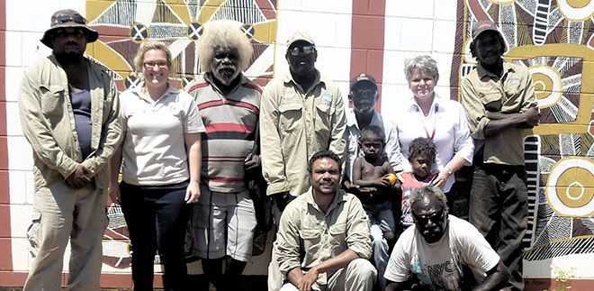
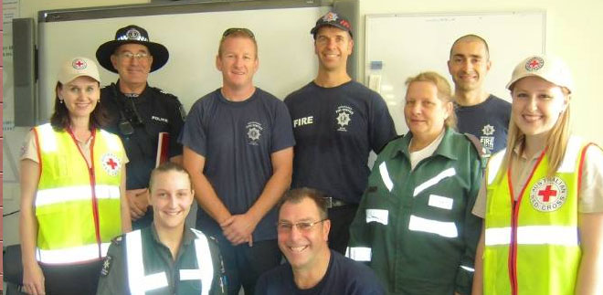
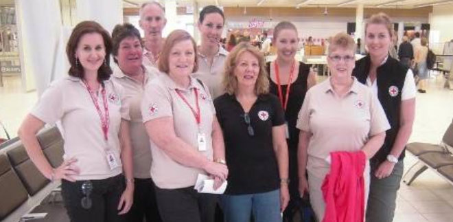
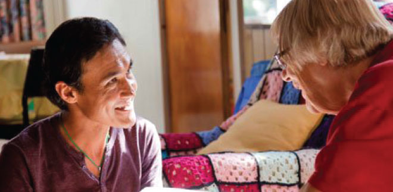
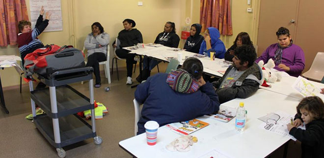
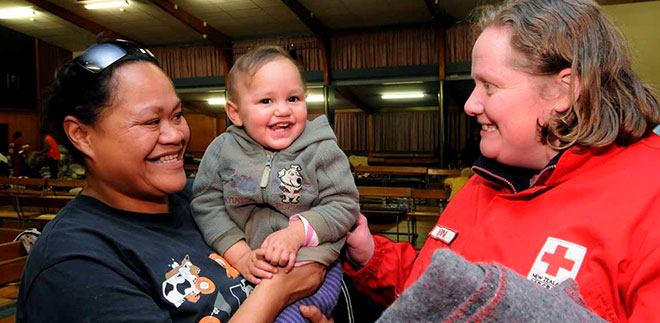

A message from Australian Red Cross Emergency Services Team.
Aboriginal REDiSupport is a Red Cross Emergency Services program that engages local community members and equips them with skills to prepare for, and recover from, emergencies.
On Tuesday 7th May, Red Cross Emergency Services staff and volunteers participated in a mock tornado scenario, together with over 90 Year 4 students at Nazareth Catholic College.
In the aftermath of Queensland’s ex-Tropical Cyclone Oswald, South Australia deployed 31 Emergency Services people (17 staff and 14 volunteers) to support those affected by floodwaters.
The REDiPlan Partnership with Councils project is being rolled out across the Onkaparinga and Mt Barker councils. Our work also continues in the Adelaide Hills council to deliver the REDiPlan program through informative seminars and home visits.
In April, two young people from the Hill House in Rutherford, New South Wales, commenced volunteer work with Riding for the Disabled. The young people volunteer for a three hour shift once a fortnight. This has provided a great opportunity for these young people to gain skills while engaging with members of the community.
Regional volunteers across South Australia have been recruited and trained to assist our team in delivering emergency services training.
Let us know what you think
We welcome your comments and suggestions. Contact the editorial team at publications@redcross.org.au